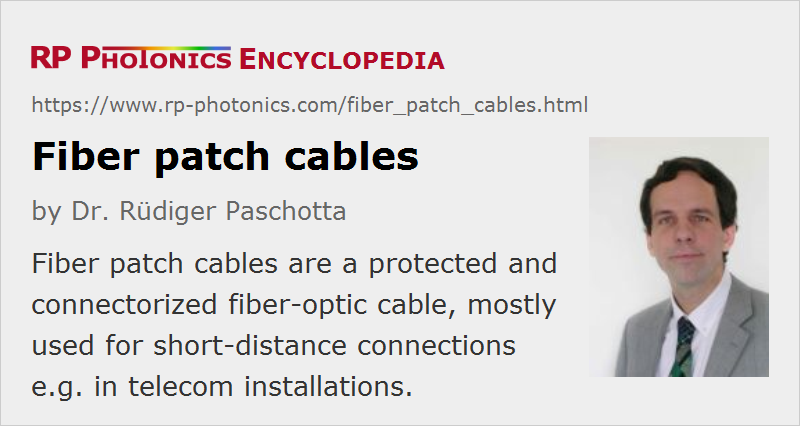

Fiber Patch Cables
Definition: a protected and connectorized fiber-optic cable
Alternative term: fiber-optic patch cords
More general term: fiber cables
German: Faser-Patchkabel
Category: fiber optics and waveguides
How to cite the article; suggest additional literature
Author: Dr. Rüdiger Paschotta
Fiber patch cables, also called fiber-optic patch cords, are cables typically containing one or two optical fibers, which are equipped with standardized fiber connectors on both ends. They are generally sold in large quantities, rather than custom-made, although quite special models are also available.
Typically, the used fiber cables have some additional mechanical protection for the fiber(s), e.g. some aramid yarns surrounded by a polymer jacket. The outer diameter is usually several millimeters, i.e., far more than the diameter of the contained fiber, which is e.g. 125 μm. There are also armored fiber cables containing stainless steel tubes.
Path cables are used in many applications:
- They are convenient e.g. for connecting devices in the context of optical fiber communications including applications like cable TV (CATV) – mostly inside buildings, e.g. in fiber to the home installations.
- They are used in computer networks (LANs = local area networks) with optical transmission for higher data rates (e.g. 10 Gbit/s).
- They are also widely used in optical laboratories, e.g. for transmitting light from a fiber-coupled light source to a measurement setup, or from there to a spectrometer, and for fiber-optic sensor systems. Special versions are available for unusual wavelength regions, e.g. patch cords with mid-infrared fibers.
- In homes, TOSLINK fiber cables can transport digital sound signals.
A typical length of a fiber patch cable is between 0.5 m and a few meters, but cables with dozens of meters or more are also available.
The actual fiber is usually a glass fiber and sometimes (e.g. for consumer-grade TOSLINK cables) a plastic optical fiber (polymer fiber).
Fiber patch cables are available with a very wide range of fiber connectors; see the corresponding article for an overview on connector types. They can be different types of fiber connectors on the ends, e.g. LC on one end and ST on the other end.
Although some fiber cables can carry extremely high optical powers (e.g. several kilowatts), patch cables are limited to much lower powers – typically a most a few watts, as is sufficient e.g. for telecom applications.
Patch cables can contain different types of optical fiber, e.g. single-mode or multimode telecom fibers – even various specialty fibers. The color of the cable often indicates the type of transmission medium – for example, yellow cables with blue connectors containing single-mode fibers, and orange or gray fibers with black connectors for multimode fibers. Some fiber cables are called “bend-insensitive”, which more precisely means that the used fibers have reduced bend losses for a given bend radius, and a reduced critical bend radius.
Duplex patch cables contain two fibers. Their connectors can have two fiber connections; alternatively, there can be two connectors on each side.
Suppliers
The RP Photonics Buyer's Guide contains 83 suppliers for fiber patch cables. Among them:
Questions and Comments from Users
Here you can submit questions and comments. As far as they get accepted by the author, they will appear above this paragraph together with the author’s answer. The author will decide on acceptance based on certain criteria. Essentially, the issue must be of sufficiently broad interest.
Please do not enter personal data here; we would otherwise delete it soon. (See also our privacy declaration.) If you wish to receive personal feedback or consultancy from the author, please contact him e.g. via e-mail.
By submitting the information, you give your consent to the potential publication of your inputs on our website according to our rules. (If you later retract your consent, we will delete those inputs.) As your inputs are first reviewed by the author, they may be published with some delay.
See also: fiber connectors, fiber cables, fiber optics, fibers, telecom fibers
and other articles in the category fiber optics and waveguides
|  |
If you like this page, please share the link with your friends and colleagues, e.g. via social media:
These sharing buttons are implemented in a privacy-friendly way!